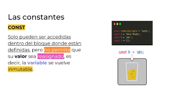
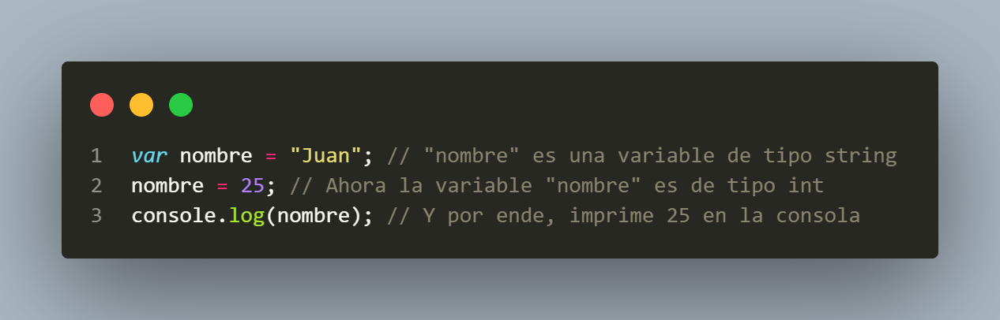
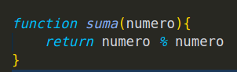

Damian
De mi parte podran visitar esta pagina con el fin de ver, verificar y evaluar mi proceso de aprendizaje de curso de javaScript, el cual es dictado por el youtuber y creador de contenido Jhon Mircha
Definicion de Variables

Esto se conoce como definion de variables, estas se pueden definir con las palabaras reservadas let y var, estas permiten crear variables pero tienen sus diferencias notorias, como que por ejemplo que las variables que se definen con let solo se pueden usar dento del bloque en el cual se encuuentren y var por contrario se puede usar dentro de bloques como globalmente.
Constantes

Esto se conoce Constantes, estas se definen con la palabra reservada const, una particularidad de esta forma de definir variable es su notable caracteristica de no poder modificar su valor (solo se puede hacer manualmente)
{kind=link}
Cadena de Caracteres

En JavaScript, una cadena de caracteres es un tipo de datos que representa una secuencia de caracteres que puede consistir de letras, números, símbolos, palabras o frases. Es importante saber que en JavaScript, las cadenas de caracteres son inmutables.
Manejo de Errores

Esto es un ejemplo sencillo de manejos de errores usando la declaracion Try catch el cual nos lanza el error con algun mensaje que el programador desee y asi evitamos errores como los de sintaxis o ingresos de respuestas incorrectas dependiendo del proposito del Codigo.
Argumentos

Esto se conoce como argumentos y se especifican dentor de los parentesis() que se encuentran despues del nombre de la funcion, su principal funcion es reutilizar variables ya declaradas, estos es imprecindible para la eficacia del Codigo